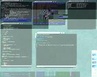

|
Enlightenment in Action
Enlightenment 0.16 Screenshots
| Thumbnail |
Description |
 |
This is what Enlightenment 0.16 should look like when you first start
it up, with the "Welcome" window in the foreground.
|
 |
Enlightenment is up and running with the "About Enlightenment" dialog,
"About this theme" dox window and middle-mouse desktop menu visible.
|
 |
KDE menus displayed in Enlightenment's menu system.
|
 |
Lots of Enlightenment's Settings dialog windows - you can see that there is a
lot to configure here!
|
 |
The "Special Effects Settings" dialog and GNOME menus in Enlightenment's
menu system.
|
 |
The "Window Group Settings" dialog, the "Application attributes" (aka
Window Remember) dialog, the XMMS
application with the Brushed-Metal skin, and selecting Enlightenment's
background in the "Desktop Background Settings" dialog.
|
 |
One of Enlightenment's tooltips and the second desktop dragged down to
reveal the first desktop underneath it.
|
 |
Enlightenment using the BlueSteel theme, also showing the desktop tooltips
hinting at what you can do by clicking on the desktop.
|
 |
BlueSteel theme with lots of settings dialogs and a menu. You can see how far
themes can go if done well to make your desktop look completely different.
|
 |
The ShinyMetal theme with a desktop tooltip and 2 dialog boxes.
|
Below are screenshots with E using other themes. Lots of screenshots and other themes
can be found at E.Themes.Org.
|
E DR16.5 on Linux X86. E makes working with lots a windows a snap! |
|
E DR16.5 on Linux X86. Here you can see several features of E, the iconbox on the right,
the pager (enlarged) on the left, and a list of the many themes currently installed. |
|  |
E DR16.5 on Linux X86. Rather minimalistic shot of E. |
|


{kind=link}
{kind=link}
{kind=link}